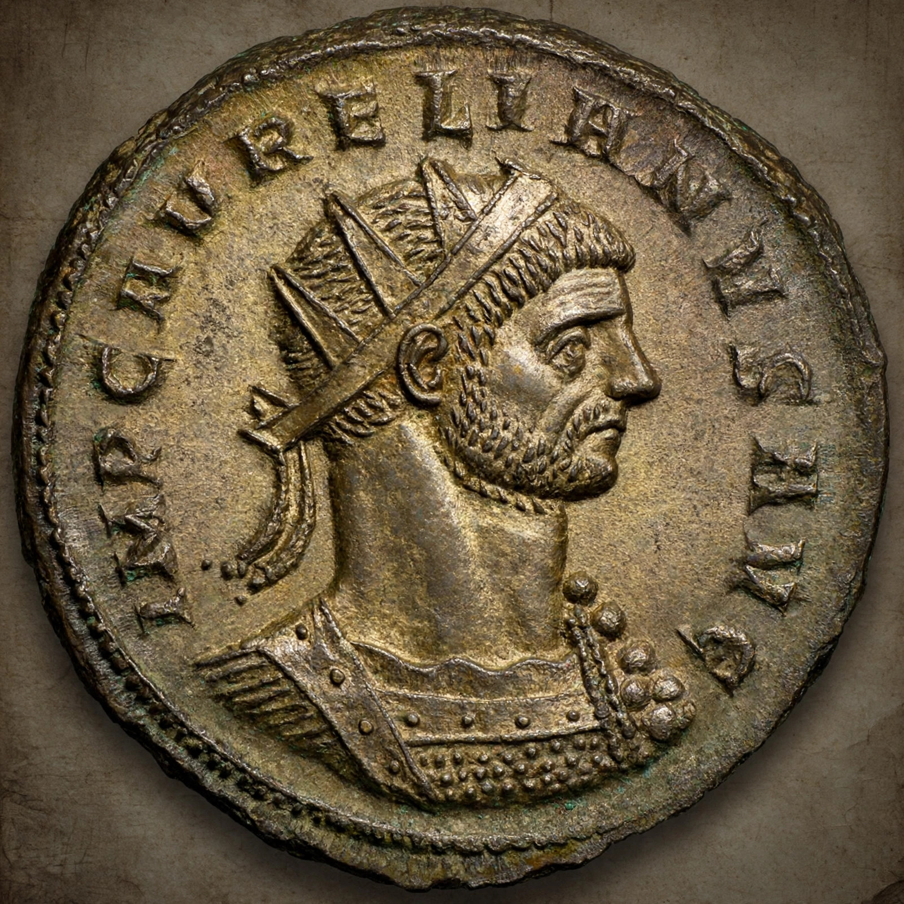

| Aurelian | |
|---|---|
| Reign | 270 – September 275 |
| Born | 9 September 214/215, Danube region |
| Died | 275, Caenophrurium (assassinated) |
| Title honoured | Restitutor Orbis — Restorer of the World |

Lucius Domitius Aurelianus (214/215–275), known as Aurelian, was Roman emperor from 270 to 275. In only five years he reunified the fractured empire during the Crisis of the Third Century, earning the title Restitutor Orbis.
Aurelian defeated Germanic invaders threatening Italy, abandoned Dacia, built Rome's Aurelian Walls (still standing), and then reconquered the breakaway states: Zenobia's Palmyrene Empire in the east (272–273, see Palmyra) and the Gallic Empire under Tetricus in the west (274), celebrating a great triumph at Rome.
He reformed the debased coinage, reorganised food distribution, and promoted the cult of Sol Invictus, building a major temple in Rome and making 25 December the god's festival.
While marching against Persia in 275, Aurelian was murdered at Caenophrurium in Thrace by officers deceived by a forged list of intended victims supposedly drawn up by his secretary. He was succeeded briefly by Tacitus (the Senate's emperor, not the historian Tacitus).